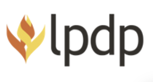

PESERTA PENYELENGGARAAN PROGRAM HACKATHON DEEPTECH

JUDUL INOVASI
HematDaya: Pemantau Energi dan Penasihat Efisiensi Berbasis Data untuk IKM
Track Sustainable Energy · Industrial Challenge Topic 6: Industrial Energy Efficiency Copilot
Ketua Tim: Ahmad Widardi, S.Kom., M.Cs.
PENYELENGGARA KEGIATAN Universitas Islam Indonesia
Direktorat Jenderal Riset dan Pengembangan Kementerian Pendidikan Tinggi, Sains, dan Teknologi
TAHUN 2026
LEMBAR IDENTITAS
1.
Judul
:
HematDaya: Pemantau Energi dan Penasihat Efisiensi Berbasis Data untuk IKM
2.
Ketua Tim Pelaksana
a. Nama Lengkap
:
Ahmad Widardi, S.Kom., M.Cs.
b. Jenis Kelamin
:
L
c. NIK
:
3318080205960001
d. Jabatan Struktural
:
–
e. Jabatan Fungsional
:
Software Engineer (profesional)
f. Institusi
:
g. Alamat
:
h. Telpon/Faks
:
085642196188
i. Alamat Rumah
:
Yogyakarta
j. Telpon/Faks/E-mail
:
085642196188 / awidardi@gmail.com
3.
Lembaga Mitra Riset (*)
:
– (belum ada)
Alamat (*)
:
–
4.
Anggota Tim Pelaksana
No.
Nama
NIK/NIP/NIM
Institusi
1.
Erwin Eko Wahyudi, S.Kom., M.Cs. (Dosen)
NIDN 0028109403
Universitas Gadjah Mada
2.
Sidiq Tri Pratikto, S.Kom. (Profesional)
3674063007960003
3.
Lukman Nurdinanto (Mahasiswa)
3674060510030004
Universitas Pamulang
(*) diisi bila ada.
Yogyakarta, 16 Oktober 2026
Ketua Tim Pelaksana,
Nama: Ahmad Widardi, S.Kom., M.Cs.
NIK: 3318080205960001
SUBSTANSI PROPOSAL PROGRAM HILIRISASI RISET STRATEGIS BANTUAN PENDANAAN PENYELENGGARAAN HACKATHON DEEPTECH
1. Judul Proposal
HematDaya: Pemantau Energi dan Penasihat Efisiensi Berbasis Data untuk IKM
2. Tema Fokus Inovasi
Bidang Strategis
☐ Digitalisasi; AI dan Semikonduktor ☑ Energi ☐ Hilirisasi dan Industrialisasi ☐ Kesehatan ☐ Pangan
5. Executive Summary (maks. 250 kata)
Sebagian besar industri kecil dan menengah (IKM) di Indonesia hanya melihat satu angka listrik: total tagihan bulanan. Mereka tidak tahu mesin mana yang paling besar kontribusinya, berapa energi yang terpakai di luar jam produksi, dan berapa energi untuk menghasilkan satu unit produk (intensitas konsumsi energi, IKE). Kewajiban manajemen energi hanya berlaku bagi pengguna energi besar, sehingga IKM tidak punya alat maupun tenaga ahli untuk mengukurnya.
HematDaya adalah aplikasi seluler dan web yang membaca data konsumsi listrik per mesin dari meter pintar yang dipasang di antara stopkontak dan mesin, atau dari catatan historis yang diimpor. Aplikasi menghitung energi dan estimasi biaya, mendeteksi konsumsi di luar jam operasional serta perubahan dibanding minggu-minggu sebelumnya, menghitung IKE dari data produksi, lalu menjelaskan temuannya dalam bahasa sehari-hari lengkap dengan bukti dan keterbatasan datanya. Pendekatannya statistik terlebih dahulu; model pembelajaran mesin hanya ditambahkan bila datanya cukup dan terbukti lebih baik dari pembanding sederhana. HematDaya hanya memantau dan menyarankan; tidak mengendalikan mesin.
Pengguna utama adalah pemilik dan pengelola IKM manufaktur, serta dinas pembina sentra IKM. Konsep ini bermula dari IdleWatch, gagasan pencarian konsumsi di luar kebutuhan operasional, dan sebuah rancangan aplikasi untuk rumah tangga yang kini dibingkai ulang untuk IKM.
Saat ini tim memiliki dokumen kebutuhan produk (PRD) dan prototipe yang sudah berjalan, ditampilkan dalam versi seluler: menerima data historis konsumsi energi (CSV), lalu menghitung biaya, konsumsi di luar jam operasional, dan IKE, memakai data sintetis. Selama program tim menargetkan TKT 4 melalui uji dengan data nyata pada pilot IKM.
6. Deskripsi Inovasi (maksimum 2 halaman)
a. Sub-tema dan problem statement
Sub-tema:Industrial Energy Efficiency Copilot (Track Sustainable Energy, Topik 6) [1]. Masalah: pemilik IKM melihat total tagihan, bukan energi per mesin atau per unit produk, sehingga kenaikan tagihan tidak dapat dibedakan antara produksi yang naik dan pemborosan. Sasaran pengguna: pemilik dan pengelola IKM manufaktur tanpa manajer energi; dinas pembina sentra IKM. Bukti kebutuhan: kewajiban manajemen energi hanya berlaku bagi pengguna energi dengan konsumsi minimal 4.000 TOE per tahun [2, 3]; pada 2023 hanya 217 entitas industri yang melaporkan manajemen energi [4], sementara unit IKM sekitar 4,45 juta [5]. Survei IEA mencatat hanya 15% perusahaan berkaryawan kurang dari 100 orang yang mengaudit energi dalam lima tahun terakhir [6]. Data lapangan dikumpulkan bersama pilot IKM saat validasi masalah. Target kinerja (hipotesis): energi dan biaya per mesin akurat terhadap pembanding meter; ≥ 80% temuan dinilai relevan oleh pemilik IKM; cakupan data ≥ 90% pada pilot. Potensi hilirisasi: langganan per pabrik, paket meter plus aplikasi, dan peta IKE bagi dinas pembina.
b. Deskripsi teknis solusi dan keunggulan
Alur data HematDaya ada pada Gambar 1. Meter pintar (awalnya Shelly Plug PM Gen3) mengirim daya dan energi kumulatif ke server melalui MQTT dengan TLS; pengguna tanpa meter dapat mengimpor CSV. Pengolah data menghapus duplikat, menangani penyetelan ulang penghitung, dan tidak mengisi data hilang dengan nol. Analitik menghitung energi per mesin dan estimasi biaya dengan tarif yang diisi pengguna, memisahkan energi di dalam dan di luar jam operasional, membandingkannya dengan median minggu-minggu sebelumnya pada rentang waktu yang sama, serta menghitung IKE dari produksi per hari. Mesin penjelas menyusun saran dari bukti yang tersimpan; model bahasa tidak menghitung energi. Aplikasi satu basis kode (React Native dan Expo) berjalan di Android, iOS, dan web: seluler memiliki tiga tab (Beranda, Perangkat, Saran), web memakai komponen yang sama dengan tata letak lebih lebar.
Keunggulan: (1) bekerja dengan satu meter dan membaca saran tanpa mengontrol perangkat; (2) setiap saran memuat pembanding, cakupan data, dan hal yang belum diketahui; (3) data hilang tidak ditampilkan sebagai nol; (4) IKE dihitung dari produksi pabrik sendiri, bukan acuan umum; (5) satu basis kode untuk seluler dan web: pemilik memantau dari ponsel, pengelola dari komputer.
Gambar 1. Arsitektur sistem HematDaya
c. Posisi TKT
Saat ini TKT 3: prototipe berjalan (tampilan seluler) menerima data historis dan menghitung biaya, konsumsi di luar jam operasional, dan IKE, tetapi baru diuji dengan data sintetis dan data impor pengguna, belum dengan meter dan data pabrik nyata; versi web penuh belum dibuat. Target TKT 4 pada akhir hackathon (pengolah data dan analitik tervalidasi pada data pilot IKM) dan TKT 5 pasca-hackathon melalui pilot.
d. Rencana kegiatan (Oktober 2026 – April 2027)
Periode
Tahap program
Kegiatan utama dan luaran
Okt 2026
Bootcamp, Problem Owner Clinic
Validasi masalah dan PRS bersama Problem Owner; wawancara 3–5 pemilik IKM; kumpulkan data tagihan dan log energi
Okt–Nov
Prototype Alpha Refinement
Pengolah data MQTT, API, aplikasi seluler (basis kode yang sama untuk web), analitik biaya, luar jam, dan IKE
Nov
Prototype Readiness Review
Evaluasi pada data pilot: akurasi energi terhadap pembanding, relevansi temuan, cakupan data
Des
Workshop, Deeptech Hackathon, Demo Day
Uji kegunaan dengan 5 pengguna IKM, perbaikan, demo
Jan–Apr 2027
Post-Hackathon Acceleration
Pilot 2–3 IKM; TKT/TKDN; HKI; business matching
e. Kebutuhan pengembangan
Kebutuhan
Rincian
Data
Tagihan listrik, catatan produksi, dan log energi 3–6 bulan dari 2–3 IKM (dianonimkan) untuk evaluasi
Perangkat keras
4–6 meter plug-in (Shelly Plug PM Gen3) untuk beban yang sesuai spesifikasi; mesin berkabel di luar lingkup awal
Komputasi dan perangkat lunak
1 server virtual; open source: React Native/Expo (seluler dan web), FastAPI, PostgreSQL, Mosquitto, scikit-learn
Akses dan uji
Sesi Problem Owner; pilot 2–3 IKM; ≥ 5 pengguna untuk uji kegunaan; mentoring teknis dan bisnis
f. Komposisi tim dan dukungan mitra
Tim lintas peran (bisnis dan hilirisasi, teknis, AI/ML, validasi pengguna); rincian pada bagian 7. Dukungan mitra: belum ada. Tim akan melibatkan Problem Owner (PT Indmira Global Energi) melalui Problem Owner Clinic dan mencari IKM pilot selama program.
7. Pembagian Tugas dan Tanggung Jawab Tim Pelaksana (maksimum 1 halaman)
Nama
Peran
Tanggung jawab
Ahmad Widardi, S.Kom., M.Cs.
Ketua Tim; Koordinator Bisnis dan Hilirisasi (profesional, software engineer)
Memimpin tim dan komunikasi dengan panitia serta Problem Owner; menyusun model bisnis, strategi masuk pasar, rencana HKI dan TKDN; memimpin presentasi dan business matching; ikut merancang arsitektur backend.
Mengembangkan aplikasi seluler dan web, API, pengolah data MQTT, dan analitik; mengatur infrastruktur dan deployment; menjaga kualitas kode.
Erwin Eko Wahyudi, S.Kom., M.Cs.
Dosen; Konsultan AI dan Machine Learning
Merancang metode analitik (baseline statistik, bila perlu Ridge) dan evaluasi kronologis; menilai kelayakan data; membimbing tim sebagai mentor selama masa persiapan.
Lukman Nurdinanto
Mahasiswa; Koordinator Validasi Pengguna (eksekutor lapangan)
Mewawancarai pemilik IKM, mengumpulkan data tagihan dan produksi, memasang meter pilot bersama teknisi, serta menjalankan uji kegunaan dan mencatat umpan balik.
Mekanisme monitoring internal
Sprint dua mingguan dengan target fitur yang mengacu pada tahapan program; rapat koordinasi singkat setiap minggu.
Papan tugas bersama dan repositori kode dengan code review untuk setiap perubahan.
Dasbor metrik yang diperbarui setiap sprint: cakupan data pilot, akurasi energi terhadap pembanding, relevansi temuan, dan hasil uji kegunaan.
Review mentor (dosen) di akhir setiap sprint dan sebelum setiap stage gate (Prototype Readiness Review, Deeptech Hackathon).
Catatan keputusan dan risiko diperbarui bersama ketua tim; perubahan lingkup harus disertai pengurangan lingkup atau penyesuaian jadwal.
8. Daftar Pustaka
[1] Universitas Islam Indonesia, ANGEL Innovation Hackathon 2026: Program Guideline. Yogyakarta: PEIAB–ANGEL, 2026.
[2] Pemerintah Republik Indonesia, Peraturan Pemerintah Nomor 33 Tahun 2023 tentang Konservasi Energi, 2023.
[3] Kementerian ESDM, Peraturan Menteri ESDM Nomor 8 Tahun 2025 tentang Manajemen Energi, 2025.
[4] Listrik Indonesia, "Implementasi Manajemen Energi Tahun 2023 Mampu Hemat 10,42 Juta SBM" (mengutip Kementerian ESDM), 9 Februari 2024.
[5] Industry.co.id, "Kemenperin Luncurkan Program IKM Hijau 2026, Bidik 4,45 Juta Industri Kecil Naik Kelas," 23 Juli 2026.
[6] International Energy Agency, Gaining an Edge: The Role of Energy Efficiency in Industrial Competitiveness, 2025.
9. Lampiran (diunggah/diisi dalam sistem)
Daftar Riwayat Hidup ketua dan seluruh anggota tim: https://drive.google.com/drive/folders/1Di_3dbKiDE5xmqYJuRK97NoeVRjxcfBy?usp=drive_link.
Portofolio karya inovasi/sertifikat kompetensi: https://drive.google.com/drive/folders/1B1rRWOHKe_FGqhcwGrLHe__zpPf2ugYt?usp=drive_link.
Bukti purwarupa: prototipe HematDaya yang dapat dijalankan (menampilkan versi seluler): https://claude.ai/artifact/M7yATNgrVRv3EJksg1NnqP; video demo 2–3 menit: https://youtube.com/shorts/FrZBGJC-DU0.